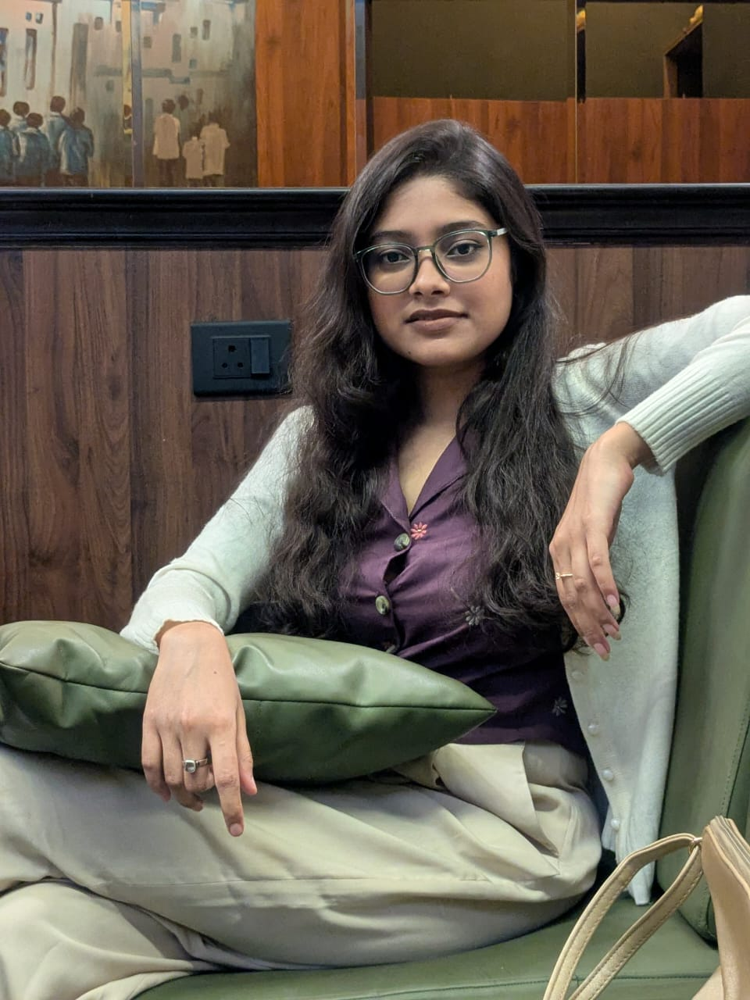

I'm a passionate professional focused on creating modern, user-centered solutions that combine thoughtful design, technical expertise, and attention to detail. I enjoy turning ideas into impactful digital experiences that are both functional and visually engaging.
